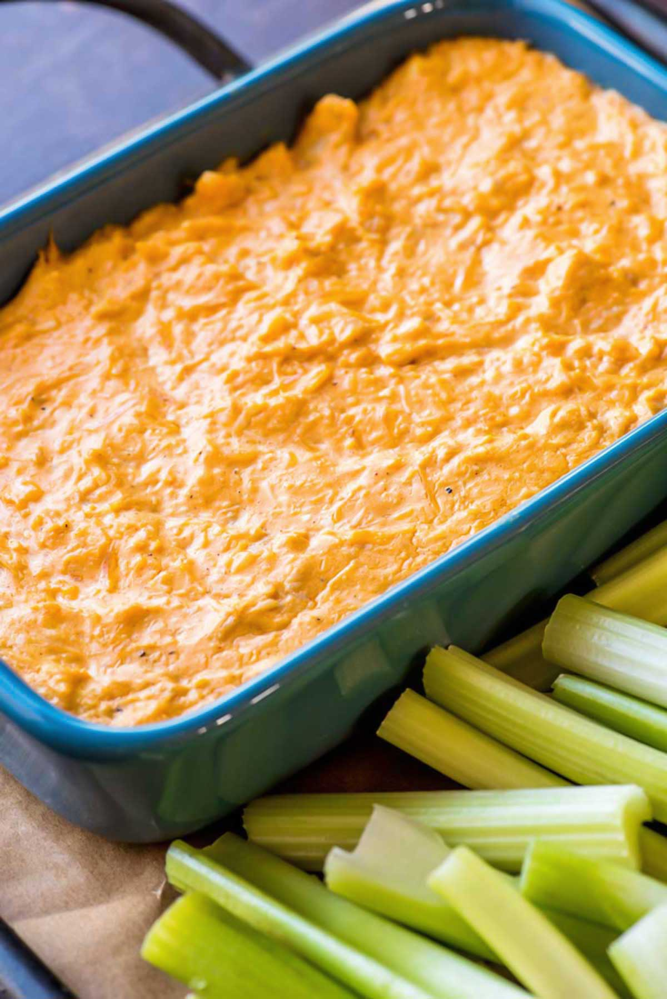

Buffalo Chicken Dip Recipe

About the Dish
Buffalo chicken dip is the superstar of appetizers. It's warm, flavorful,
and even has a little bit of a kick to get ya goin'. This recipe is a slightly
modified version of the recipe you'll find on a bottle of Frank's Red Hot
Buffalo sauce.
Ingredients:
- 1 whole rotisserie chicken
- 2 cups fiesta blend shredded cheese
- 2 cups Frank's Red Hot Buffalo
- 1.5 cup low fat ranch dressing
- 1/2 cup scallion, diced
- 8 oz low fat cream cheese
Cooking Instructions:
- Preheat oven to 350 degrees F
- Shred rotisserie chicken, using both white and dark meat.
- Microwave cream cheese for 30 seconds, add to large mixing bowl.
- Add chicken, Frank's Red Hot Buffalo, ranch dressing, and 1 cup shredded
cheese to bowl. Mix thoroughly.
- Transfer contents of bowl into oven safe dish. Bake for 20 minutes
- At halfway point, add 1 cup of shredded cheese and scallions to
top of dish.
- Let stand for 10 minutes, enjoy!